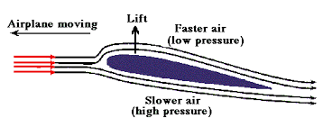

LIFT!
The upward force
How it works
Weight's opposing force is lift, which holds an airplane in the air. This feat is accomplished through the use of a wing, also known as an airfoil. Like drag, lift can exist only in the presence of a moving fluid. It doesn't matter if the object is stationary and the fluid is moving (as with a kite on a windy day), or if the fluid is still and the object is moving through it (as with a soaring jet on a windless day). What really matters is the relative difference in speeds between the object and the fluid.
As for the actual mechanics of lift, the force occurs when a moving fluid is deflected by a solid object. The wing splits the airflow in two directions: up and over the wing and down along the underside of the wing.
The wing is shaped and tilted so that the air moving over it travels faster than the air moving underneath. When moving air flows over an object and encounters an obstacle (such as a bump or a sudden increase in wing angle), its path narrows and the flow speeds up as all the molecules rush though. Once past the obstacle, the path widens and the flow slows down again. If you've ever pinched a water hose, you've observed this very principle in action. By pinching the hose, you narrow the path of the fluid flow, which speeds up the molecules. Remove the pressure and the water flow returns to its previous state.
As air speeds up, its pressure drops. So the faster-moving air moving over the wing exerts less pressure on it than the slower air moving underneath the wing. The result is an upward push of lift. In the field of fluid dynamics, this is known as Bernoulli's principle.
